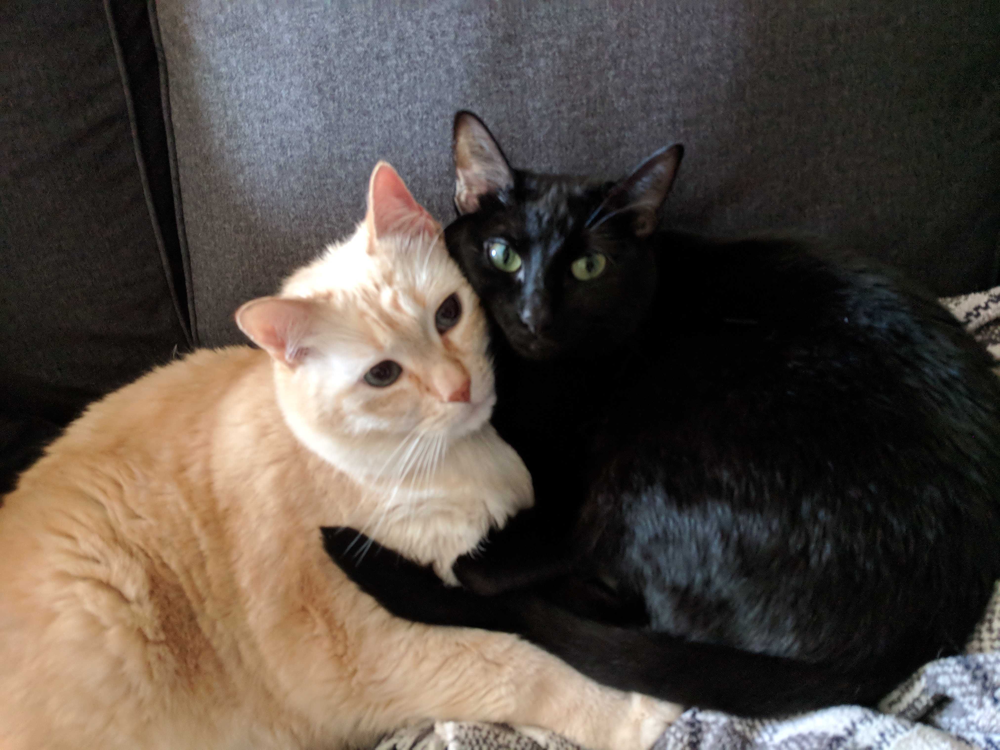
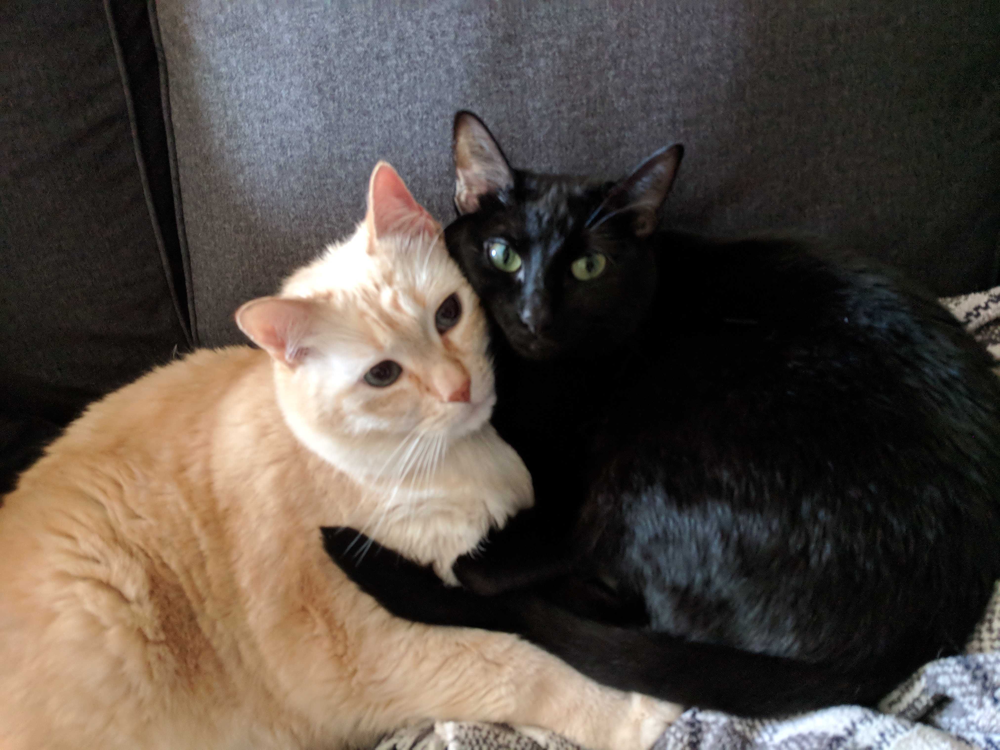
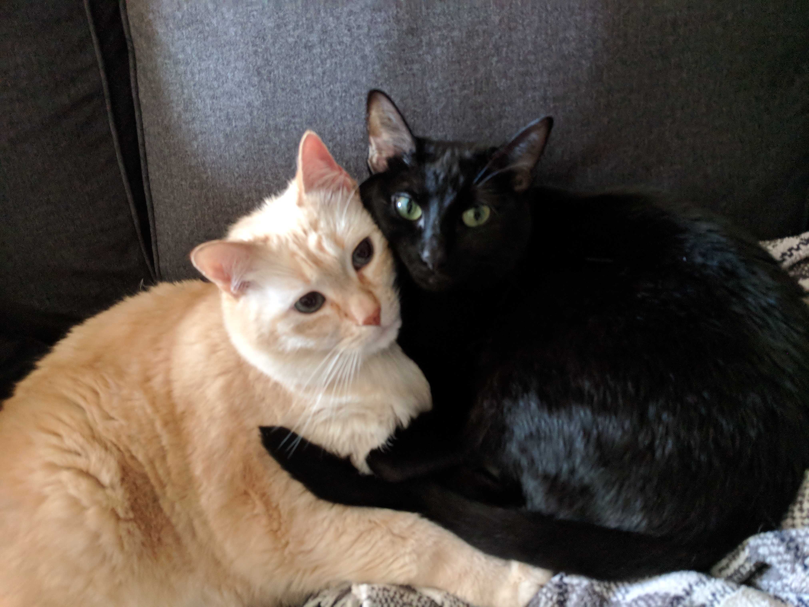

About Me
Mysterious, and often misunderstood, Kristy lurks in the back of the classroom, raising her hand only when called on...

Mysterious, and often misunderstood, Kristy lurks in the back of the classroom, raising her hand only when called on...